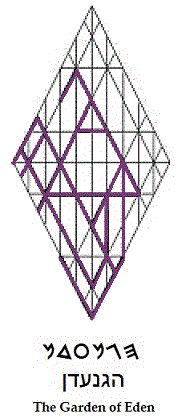
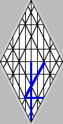
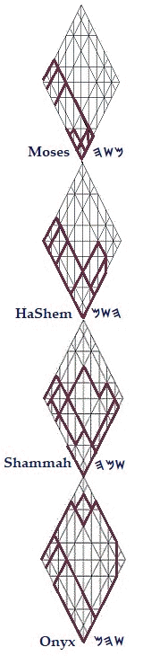

We Walked with God
Whether we see ourselves as standing together as One at the end of this
present age, or whether we yet cling to the old-world fiction that
personal isolation is justification for the pursuit of material
advantage, we stagger under the weight of cycles we cannot fully
comprehend. Dazed and quite possibly imperiled, our only objective
certainty is that the world to which we have become accustomed is going,
if not gone, and that it will not return. Plagued with uncertainty, we
do our best to strengthen our resolve, intending to keep doing much as
we’ve been doing all along, so long as we are able. We’ve become captive
to tarnished lives; for even those who seem comfortable in the injustice
that engulfs us are languishing—as in the days of Noah.
Wonders remain to be discovered within Torah, therefore; for the Tree of Lives, which is integral to its narrative, has twelve manner of fruits, which are to appear in their seasons—in their times. In a literal sense, those times are again pressing upon us in the budding foliage of the Crown Diamond; for it is imprinted with the pattern to which Moses was bound on Mount Sinai by the Angel of the Presence. Sinaitic Hebrew, the language of Torah, hasn’t been forgotten: the key to knowledge, it was simply shelved. The holy Moses script fell to disuse on Earth, except within isolated communities of rural Yemen.
If we have yet to discover the fullest applications of prophecy, we do know the pattern to which the prophets speak; for we live within that pattern as expressed by the mathematics of Creation, which are the mathematics of Torah. As this present age comes to a close, we sense that the ancient pattern given to Noah and authenticated on Sinai is now blossoming, anew: that a new age is coming, both upon us and within us. We sense that humanity is being readied for fulfillment of promise: when all that is without will mirror the peace that shall appear within.
The petals of Adam Kadmon are opening. Its bud was shaped by the pattern that the root derived from the seed, which was encoded with the core dynamics of its flower, as demonstrated by the complex pattern of the Crown Diamond of the Believers’ Tree of Life.
An early observation of the Crown Diamond is that all Western alphabets share a common source within its grid. Mankind’s alphabets are among the first fruits of myyjh xo, the Tree of Life: we’ve rediscovered, in the Diamond’s design, that every letter of every inspired word of scripture—both Hebrew and Greek alike, along with every sentiment scribbled down by men of the West, can be traced upon its grid: mapped within it in the spiritual sense, also; for the Diamond’s lines follow the logic of Adam Kadmon, the image of Man as projected in the likeness of Elohim. Further, because the chakras of Eastern civilization are inherent to the intersecting lines of the Crown Diamond, its symbolism has its corollaries within many cultures. Like the Lotus, it is a platform for prayer.
Beyond their literal and figurative meanings,
therefore, our words carry intrinsic physiological and spiritual
impacts, with implications that can be predicted by the logic within the
symbol of the Tree of Life. Were we masters of the dynamics involved, we
could say to a mountain, through faith believing, “Be removed”; and it
would go, whether made of earth or of some ineffable, spiritual essence;
for with Elohim in a quantum universe, nothing shall be impossible.
Rooted in the geometry of Creation, the pattern of biblical words was
demonstrated to Moses on Sinai; and those who study the Crown Diamond
find themselves standing beside him, now, at another Pisgah, overlooking
a new land: one flowing with the milk and honey of a new science for men
of faith.
There’s a fundamental distinction between language and speech. We know
not the significance of what we speak, but we are learning. Language is
the pattern of a linguistic system, and speech is the specific
utilization of that pattern for communication.
We
understand that the meanings of the words in any specific language can
be amplified or mitigated by the art of speech. We understand, also,
that what is said has its impact upon and within both those who hear and
those who speak. Delivery matters, but the
leverage of speech
derives from the power of language, itself, and not from any clever
enunciation of its words. Incantation is useless self-abuse, unless it
addresses specific measurements inherent to a precise context, which
would make for short speech.
Before rediscovery of the
Crown Diamond diagram, a word’s meanings were driven primarily by usage
associated with sound in specific locales during specific eras. Now that
a word’s etymology can be studied through the lens of two-dimensional
geometry, a new science has arrived. Before we can say much about its
implications for future studies of Torah and other writings, we must
learn more about the operations of language in the simplistic confines
of the Diamond’s two-dimensional representation as it relates to the
human body.
Torah was presented to Moses and to those with him, which included a
mixed multitude versed in the Phoenician language, now known as Sinaitic
Hebrew, as Proto-Canaanite, as Ancient Arabic and Greek, and as Paleo. The language
of Torah’s Five Smooth Stones was the common language in Egypt at the
time of the Exodus. It served the Middle-Eastern peoples of Pharaoh’s
realm as the language of commerce, much as English does today throughout
the modern world. The language of Torah would have been understood by
almost everyone who fled Pharaoh. They were accustomed to it.
They used it.
Torah was therefore written with everyday letters drawn to divine
specifications. When Moses wrote of the Garden in Sinaitic Hebrew, he
was under the imperative that the writing comport in precision with the
pattern impressed upon him by the Holy One who commanded him to write.
The Moses script was engraved in congruence with the geometry of
Creation, not in any tribal code. In reference to Torah in its original
language much later—after the key to knowledge had long been taken
away—the Nazarene explained, “I have food to eat you know not of.” His
food was Torah as read in the language of our Father and father Adam as
they walked the grounds of the Tree of Lives, together.
Eden is the story of the age
of innocent perfection lost through error. As this present,
computerized, Industrial Age comes to an end, differences within and
among peoples have become too complicated to bridge. Ancient distortions
and errors have entered diverse thought processes, much like a virus,
corrupting the data in the collective subconscious, and turning the
conscious thoughts of diligent souls into whirling swords that detract
from a focused consideration of Principle—even by those souls whose
minds are committed to responsible inquiry.
The clamor of accumulated error has imprisoned all of us, but the Essene
Teacher of Righteousness came to set us free by Truth. The man of
Galilee taught that Eden and its Kingdom of Names is within each of us,
and that the flimsy walls preventing clear vision of its contours are
quilted from inward seas of erroneous memories and blind surmise. If
HaShem permits, the emblems of the biblical language of Moses will,
again, restore the leverage needed to part the waters of the Sea of
Rods, that the children of the Most High might regain sure footing: both
as concerns the Sea of Reeds, which stretches out before us, and as
concerns River Jordan, which descends upon and within us, as from above.
Wheels within wheels. We are yet adrift on the waters of Babylon, whose
flood has yet to reach Ararat. We lay ourselves down, and we weep. When
we shall have become fully awake, emerging from the confusion in which
we have floundered for so long, we shall be as dreamers: we’ll shake off
the residue of slumber that pulls at our thoughts, and we’ll rebuild
what was lost through error. Yes, our God
hwhy
gives (hy)!
Yes, righteous
hwhy
judges (hw)!
And, yes,
hwhy
restores!
Blessed be the Name
hwhy;
and blessed are all whose thoughts are imprinted by his holy emblems;
for HaShem YHWH
bestows
y
enlightenment
h
upon all who cherish and uphold
w
Life
h.
It’s time to rebuild the House of David within each of us. It’s a sacred
house that belongs to no religion, but to us all.
{kind=link}
hwhy makes divine faces to shine upon us
(hy),
and is gracious unto
us
(hw).
hwhy
lifts up divine expressions
within us
(hy),
and gives us peace
(hw).
| Four Baptisms | ||
|
site |
TrueType Font |
book |